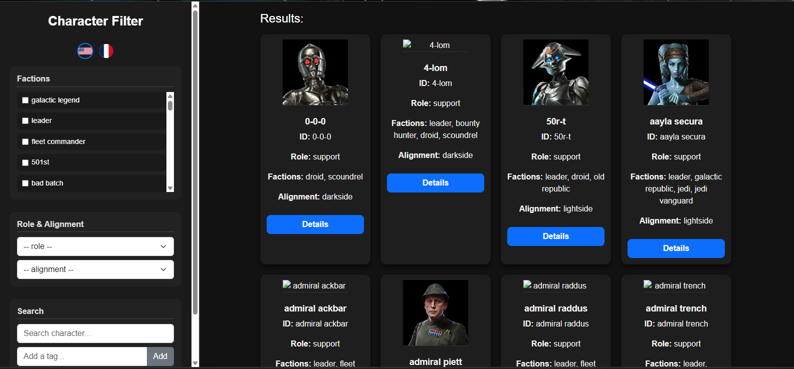

Page de filtrage des personnages - SWGOH
Présentation
Cette page interactive permet de filtrer, rechercher et afficher dynamiquement les
personnages du jeu
Star Wars: Galaxy of Heroes à partir du fichier units.json généré par la base de
données.
Elle offre un système de tri complet basé sur les factions, rôles, alignements, ainsi qu’une recherche en texte libre et par tags personnalisés.
Interface principale du filtre : à gauche les filtres, à droite les résultats.
Structure générale
La page est divisée en deux grandes zones :
- La barre latérale (gauche) : contient les différents filtres et outils de recherche.
- Le contenu principal (droite) : affiche dynamiquement les cartes des personnages correspondant aux critères.
L’ensemble est géré en JavaScript pur et met à jour l’affichage sans recharger la page, grâce à la manipulation du DOM.
Interface des filtres
Les filtres sont regroupés dans des boîtes distinctes (.filter-box) et permettent de
combiner plusieurs critères :
- Factions : générées automatiquement à partir des données du JSON.
- Rôle et Alignement : sélectionnables via des listes déroulantes (en anglais et français).
- Recherche : champ texte pour filtrer par nom de personnage.
- Tags personnalisés : possibilité d’ajouter plusieurs tags pour combiner plusieurs filtres rapidement.
- Bouton de réinitialisation : permet d’effacer tous les filtres actifs.
Chaque changement de filtre déclenche une fonction JavaScript (applyFilters()) qui
reconstruit dynamiquement
la liste des cartes affichées à droite.
Chargement des données JSON
Les informations affichées sont chargées depuis le fichier units.json, généré par la base
de données d’administration.
Le chargement s’effectue via la fonction suivante :
fetch("units.json")
.then(res => res.json())
.then(data => {
characters = data;
applyLanguageOnLoad(); // Application automatique de la langue
})
.catch(err => console.error("Erreur de chargement du JSON :", err));
Chaque personnage est ensuite traité pour extraire son nom, rôle, alignement et liste de factions.

Gestion multilingue (Français / Anglais)
Le système propose un basculement instantané entre le français et l’anglais grâce à deux drapeaux situés en haut de la barre latérale.
- Le choix de langue est enregistré dans
sessionStoragepour persister entre les pages. - Le texte statique (titres, boutons, placeholders) est mis à jour par la fonction
updateStaticText(). - Les noms des personnages, rôles, alignements et factions sont affichés dans la langue sélectionnée.
Recherche et système de tags
L’utilisateur peut rechercher un personnage en tapant son nom ou en ajoutant des tags personnalisés (ex. : “rebelle”, “tank”, “lightside”…).
Les tags peuvent correspondre à :
- Une faction
- Un rôle
- Un alignement
- Une partie du nom du personnage
Chaque tag ajouté est affiché en haut de la zone de résultats sous forme de badge
cliquable.
Cliquer dessus permet de le supprimer instantanément et de rafraîchir les résultats.
Affichage des résultats
Les personnages correspondant aux critères sont affichés sous forme de cartes dynamiques.
- Chaque carte affiche :
- l’image du personnage
- son nom (langue sélectionnée)
- son identifiant interne (
id) - son rôle, alignement et factions
- un bouton Détails menant vers la page descriptive
- Le tri des factions est effectué en fonction de leur priorité :
Galactic Legend → Leader → Fleet Commander → autres.

Ici, on peut voir qu'avec le filtrage Factions : bad batd avec le Rôle : attacker et l'Alignement : Light Side On obtient 4 unité qui correspondent à ce filtrage : Batcher / Crosshair (Scarred) / Hunter et Omega
Si aucun personnage ne correspond, un message “Aucun personnage trouvé” (ou “No characters found”) s’affiche selon la langue active.
Fonctionnement global
Le processus global de filtrage fonctionne selon les étapes suivantes :
- Chargement du fichier
units.json - Application automatique de la langue en cours
- Génération dynamique des filtres de factions
- Application des filtres actifs via
applyFilters() - Affichage ou mise à jour des cartes dans la zone principale
Tout se fait côté client (front-end) sans rechargement de page ni interaction directe avec la base SQL. Les performances sont assurées par la structure optimisée du fichier JSON.
Comparaison et évolution du système de filtrage
Le système actuel de filtrage des personnages représente la version finale et la plus aboutie du projet SWGOH Kit. Il a été conçu après plusieurs itérations et réflexions sur la manière d’afficher, trier et rechercher efficacement les unités du jeu. Avant cette version dynamique, une ancienne version statique avait été réalisée : elle reposait sur une simple table HTML contenant manuellement les liens vers les pages de chaque faction.
Cette version initiale, bien que fonctionnelle, posait des limites évidentes en matière d’évolutivité et d’automatisation. Le passage à la version actuelle marque une transition majeure entre une approche manuelle et une approche orientée données, où les informations sont chargées automatiquement depuis un fichier JSON.
Le tableau suivant illustre les principales différences, évolutions, avantages et inconvénients entre ces deux approches.
| Critère | Ancienne version (statique) | Nouvelle version (dynamique) |
|---|---|---|
| Structure générale |
La page reposait sur un grand tableau HTML dans lequel chaque lien vers une faction était écrit manuellement.
La structure était simple mais figée : toute modification (nouvelle faction, changement de nom, ajout d’un rôle)
nécessitait d’éditer directement le code source.
🔗 Voir l’ancienne version |
L’interface est désormais générée automatiquement via JavaScript à partir d’un fichier JSON
(units.json) contenant la liste complète des personnages et de leurs attributs.
Cela permet d’ajouter ou de modifier des données sans toucher au code HTML.
🔗 Voir la version actuelle |
| Gestion des données | Les catégories et factions étaient écrites en dur dans le code. Le fichier n’était qu’un assemblage de liens HTML, sans logique de traitement ou de filtrage. L’ajout d’une faction impliquait de copier une ligne entière de code. | Les données sont chargées dynamiquement depuis un fichier JSON centralisé. Le JavaScript lit les propriétés des personnages et crée automatiquement les filtres correspondants. Ainsi, le système est entièrement automatisé et réactif aux nouvelles données. |
| Interactivité | Le tableau offrait uniquement des liens statiques : cliquer sur une faction redirigeait vers une autre page. Aucun filtrage en temps réel, aucune recherche instantanée, et aucune interaction dynamique avec le contenu. | L’interface actuelle est hautement interactive et intuitive : elle permet un filtrage instantané selon plusieurs critères (faction, rôle, alignement, etc.), une recherche textuelle, et l’affichage simultané de plusieurs filtres combinés. Tout cela s’effectue sans rechargement de la page. |
| Langues disponibles | L’ancienne version était uniquement disponible en français. Aucun système multilingue n’était prévu, ce qui limitait l’accessibilité du projet. |
La version actuelle introduit un système bilingue complet (FR / EN) avec détection automatique
de la langue de l’utilisateur et mémorisation du choix via sessionStorage.
Cela rend l’application plus accessible et plus professionnelle.
|
| Maintenance et évolutivité | Toute mise à jour demandait de modifier manuellement le code HTML. Cela entraînait un fort risque d’erreur humaine et un travail répétitif. | Grâce à la structure modulaire du code et à la séparation des données dans le JSON, les mises à jour se font automatiquement. Le développeur peut ajouter une unité dans le JSON et la voir apparaître instantanément dans le filtre. |
| Design et accessibilité | L’interface était fonctionnelle mais basique : fond noir, tableau centré, peu d’adaptabilité mobile. Le design n’était pas homogène avec le reste du site. | Le design actuel reprend la charte graphique principale du projet : fond bleu nuit, titres dorés et interface responsive. Le tout est géré avec Bootstrap et Flexbox pour une compatibilité sur tous les écrans. |
| Performance et chargement | Le chargement était immédiat mais le fichier HTML était très lourd (plus de 200 lignes). Aucun traitement ou optimisation côté client. | Le chargement initial lit le fichier JSON, ce qui prend un peu plus de temps, mais une fois chargé, le filtrage et l’affichage sont instantanés. Le code HTML est allégé et déporté vers du JavaScript plus efficace. |
| Avantages principaux |
- Facile à comprendre pour un débutant. - Fonctionne sans dépendance externe (ni JS, ni JSON). - Bon point de départ pour une maquette statique. |
- Complètement automatisée et évolutive. - Expérience utilisateur fluide et moderne. - Maintenance centralisée via le JSON. - Parfaite démonstration de développement front-end dynamique. |
| Inconvénients principaux |
- Très peu flexible et chronophage à mettre à jour. - Risque élevé d’erreurs lors des modifications. - Aucune interactivité ni adaptation mobile. |
- Dépendance à la structure JSON (toute erreur bloque le chargement). - Requiert de bonnes notions de JavaScript et DOM. - Légèrement plus long à charger lors de la première ouverture. |
En résumé, cette évolution illustre parfaitement le progrès technique et méthodologique du projet : le passage d’une simple page statique à une application web dynamique, capable d’adapter son contenu automatiquement à partir de données structurées. Cela démontre une maîtrise des outils modernes du développement web front-end : JavaScript, JSON, Bootstrap et DOM dynamique.